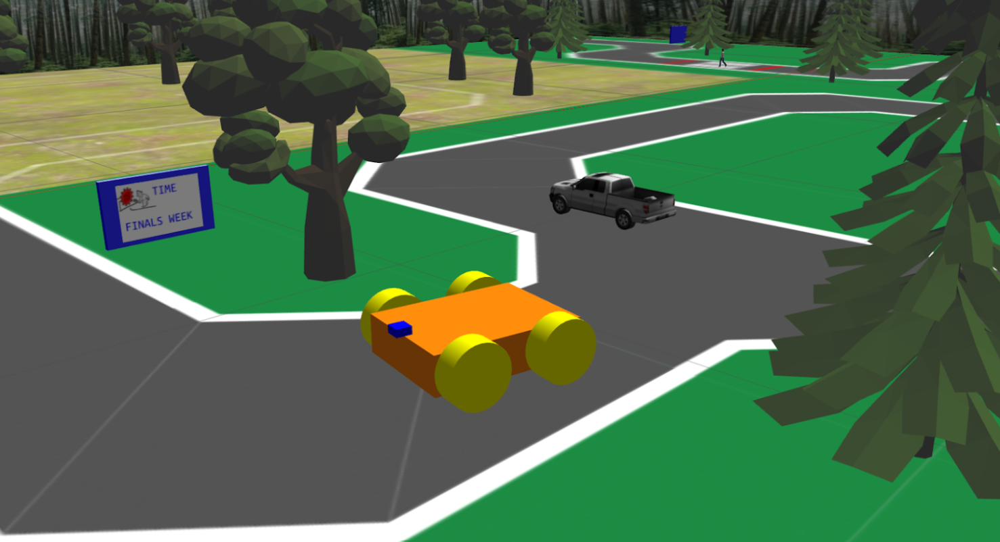
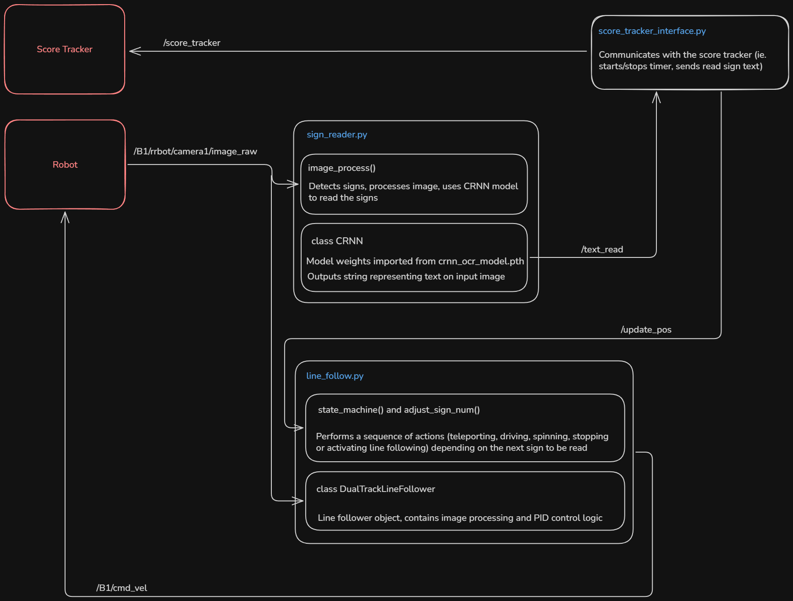

Simulated Detective Vehicle
A simulated robotic vehicle that navigates its environment and reads clues.
As part of a team of two, I developed and competed with an autonomous robot in a simulated environment, using computer vision and machine learning to navigate a course and read clues to solve a fictional crime.
The challenge was to navigate an environment containing paved roads, grassy paths, and a mountain climb, while avoiding pedestrians and other vehicles. Clues were written on signs throughout the course, requiring the robot to detect signs and interpret their text using its onboard camera.
Our solution integrated a range of image processing, machine learning, and control systems:
- OpenCV image processing to identify road boundaries and estimate the centre of the lane
- A PID feedback controller for camera-based line following, with boundary tracking to handle turns where one road edge moved out of view
- Colour filtering and perspective transformations to detect signs and prepare their text for recognition
- A convolutional recurrent neural network built in PyTorch to read text, with repeated readings combined to improve reliability
- ROS nodes to coordinate navigation, sign recognition, and submission of clues to the competition’s scoring system
The text recognition model was trained on 1,000 synthetic images with varying levels of blur and distortion, achieving 99.32% accuracy on a synthetic validation set.


